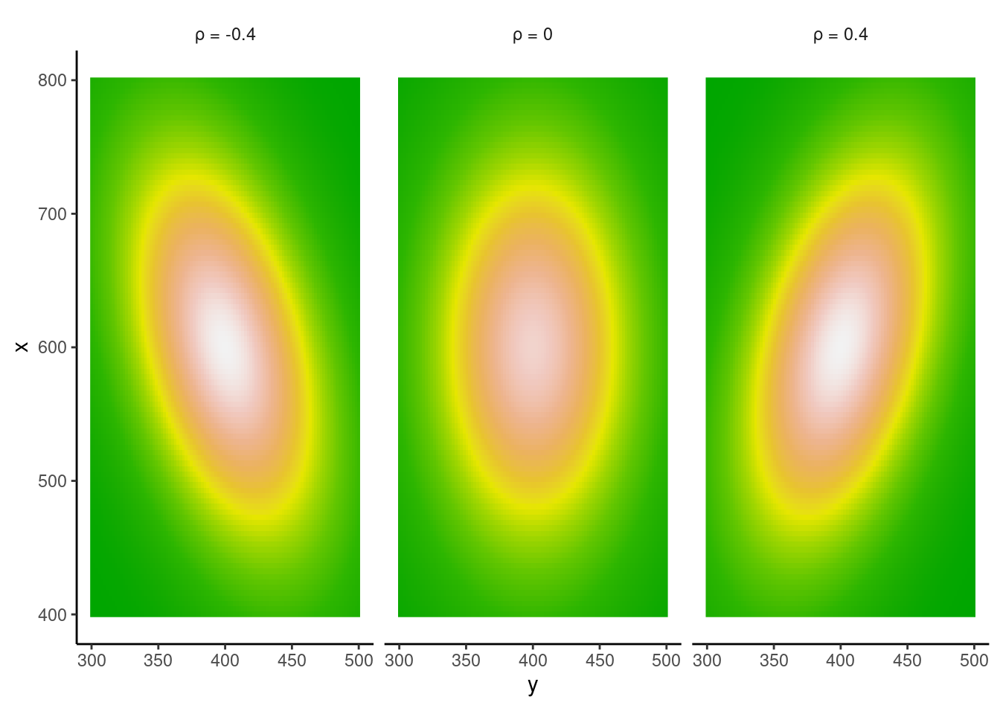

pnorm(800, mean = 500, sd = 100) - pnorm(200, mean = 500, sd = 100) [1] 0.99730021-2*pnorm(200, mean = 500, sd = 100)[1] 0.9973002Given a normal distribution with mean 500 and standard deviation 100, use the pnorm function to calculate the probability of obtaining values between 200 and 800 from this distribution.
pnorm(800, mean = 500, sd = 100) - pnorm(200, mean = 500, sd = 100) [1] 0.99730021-2*pnorm(200, mean = 500, sd = 100)[1] 0.9973002pnorm() function–Part 2Calculate the following probabilities. Given a normal distribution with mean 800 and standard deviation 150, what is the probability of obtaining:
a score of 700 or less a score of 900 or more a score of 800 or more
c(pnorm(700, 800, 150), pnorm(900, 800, 150, lower.tail = FALSE), 1-pnorm(800, 800, 150))[1] 0.2524925 0.2524925 0.5000000pnorm() function–Part 3Given a normal distribution with mean 600 and standard deviation 200, what is the probability of obtaining:
a score of 550 or less. a score between 300 and 800. a score of 900 or more.
c(pnorm(550, 600, 150), pnorm(800, 600, 150)-pnorm(300, 600, 150), 1-pnorm(900, 600, 150))[1] 0.36944134 0.88603865 0.02275013qnorm() function–Part1Consider a normal distribution with mean 1 and standard deviation 1. Compute the lower and upper boundaries such that:
the area (the probability) to the left of the lower boundary is 0.10. the area (the probability) to the right of the upper boundary is 0.90.
c(qnorm(.1, 1, 1), qnorm(.9, 1, 1, lower.tail = FALSE))[1] -0.2815516 -0.2815516qnorm() function–Part2Given a normal distribution with mean 650 and standard deviation 125. There exist two quantiles, the lower quantile q1 and the upper quantile q2, that are equidistant from the mean 650, such that the area under the curve of the normal between q1 and q2 is 80%. Find q1 and q2.
x <- c(qnorm(.1, 650, 125), qnorm(.1, 650, 125, lower.tail = FALSE))
pnorm(x[2], 650, 125) - pnorm(x[1], 650, 125) [1] 0.8Given data that is generated as follows:
data_gen1 <- rnorm(1000, 300, 200)Calculate the mean, variance, and the lower quantile q1 and the upper quantile q2, that are equidistant and such that the range of probability between them is 80%.
c(mean=mean(data_gen1), var=var(data_gen1), quantile(data_gen1, c(.1, .9))) mean var 10% 90%
296.00915 39355.12453 39.01605 552.92524 This time we generate the data with a truncated normal distribution from the package extraDistr. The details of this distribution will be discussed later in section 4.1 and in the Box 4.1, but for now we can treat it as an unknown generative process:
library(extraDistr)
data_gen1 <- rtnorm(1000, 300, 200, a = 0)Using the sample data, calculate the mean, variance, and the lower quantile q1 and the upper quantile q2, such that the probability of observing values between these two quantiles is 80%.
c(mean=mean(data_gen1), var=var(data_gen1), quantile(data_gen1, c(.1, .9))) mean var 10% 90%
327.6990 28366.5446 104.6224 551.4198 Suppose that you have a bivariate distribution where one of the two random variables comes from a normal distribution with mean \(μ_X=600\) and standard deviation \(σ_X=100\), and the other from a normal distribution with mean \(μ_Y=400\) and standard deviation \(σ_Y=50\). The correlation \(ρ_{XY}\) between the two random variables is 0.4. Write down the variance-covariance matrix of this bivariate distribution as a matrix (with numerical values, not mathematical symbols), and then use it to generate 100 pairs of simulated data points. Plot the simulated data such that the relationship between the random variables \(X\) and \(Y\) is clear. Generate two sets of new data (\(100\) pairs of data points each) with correlation \(-0.4\) and \(0\), and plot these alongside the plot for the data with correlation \(0.4\).
